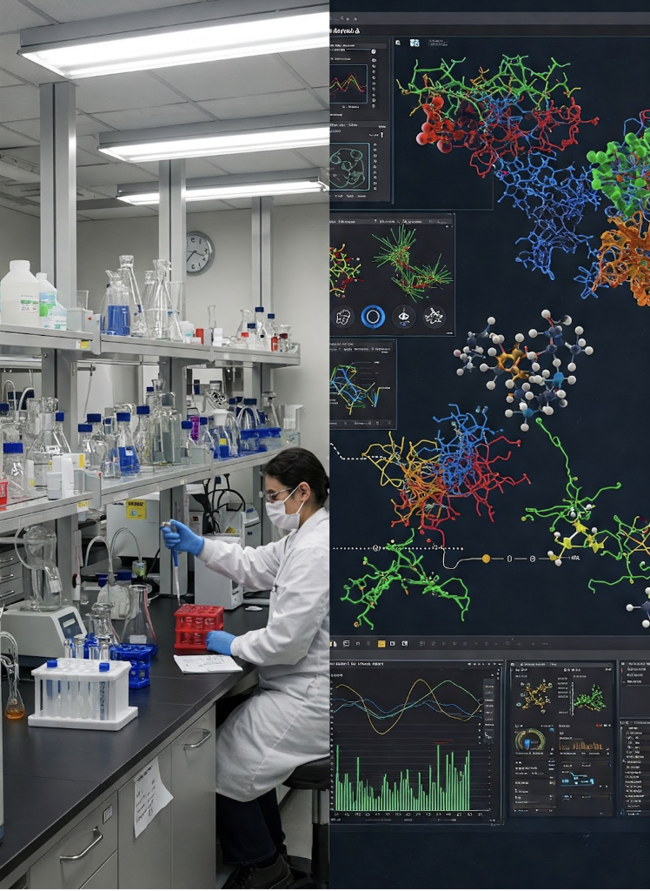

A curated list of essential online resources for drug discovery and biomedical research, gathered by a fellow data scientist.
These are foundational resources for genomic, proteomic, and chemical data.
A comprehensive suite of biomedical and genomic databases and tools. Key sub-databases include:
The single worldwide archive of structural data of biological macromolecules (proteins, nucleic acids, etc.). Essential for structural biology and structure-based drug design.
Another major hub for biological data resources and bioinformatics services. Notable resources include:
A comprehensive, freely accessible, online database containing information on drugs and drug targets. Combines detailed drug data with drug target information.
A database of privately and publicly funded clinical studies conducted around the world.
Beyond PubMed, these resources can help you dig deeper into published research and intellectual property.
An abstract and citation database of peer-reviewed literature across various scientific disciplines (often requires institutional access).
Another powerful citation indexing and search service for academic literature (often requires institutional access).
A comprehensive searchable database for international patents.
Free access to millions of patent documents from around the world.
More niche resources for specific aspects of drug discovery.
An excellent reference website containing a searchable database of drug targets, ligands, and diseases.
A curated database of measured binding affinities, focusing on the interactions of proteins with small molecules.
Offers a searchable database of drugs with annotated properties collected from the literature, along with some calculated properties.
High-quality, manually curated database of biologically active compounds with expert reviews, guiding selection of appropriate chemical tools for target validation.